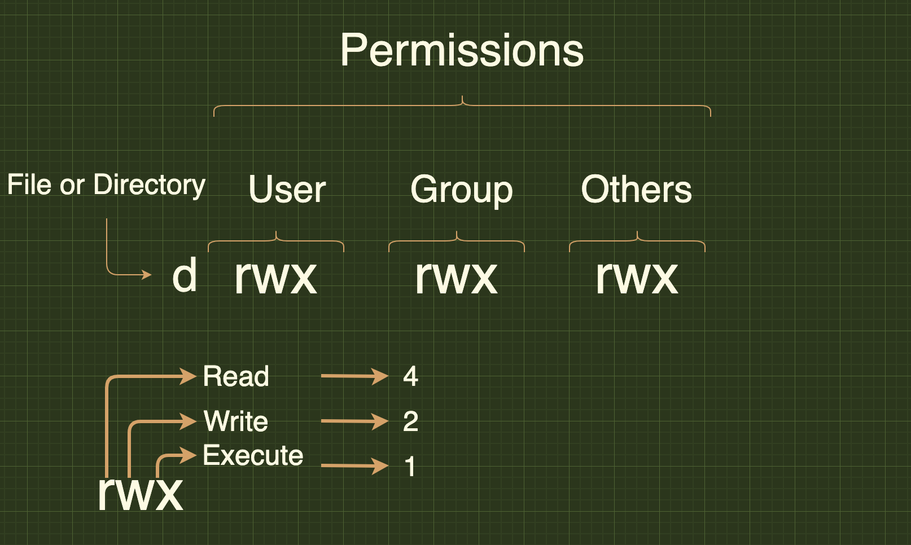

Linux Commands¶
User Information¶
-
who It is used to get information about currently logged in user on to system. If you don't provide any option or arguments, the command displays the following information for each logged-in user.
- Login name of the user
- User terminal
- Date & Time of login
- Remote host name of the user
- whoami: It display the system’s username
- id: It display the user identification(the real and effective user and group IDs) information
$ id
uid=1000(sj) gid=1000(sj) groups=1000(sj),4(adm),24(cdrom),27(sudo),30(dip),46(plugdev),120(lpadmin),131(lxd),132(sambashare)
- finger: Used to check the information of any currently logged in users. i.e, It displays users login time, tty (name), idle time, home directory, shell name etc.
This may not be available by default in many linux machines. In this case, you need to install it manually.
6. users: Displays usernames of all users currently logged on the system.-
grep: It is a powerful pattern searching tool to find information about a specific user from the system accounts file: /etc/passwd.
-
W Command: It(W) is a command-line utility that displays information about currently logged in users and what each user is doing.
-
last or lastb: Displays a list of last logged in users on the system. You can pass user names to display their login and hostname details.
last [options] [username...] [tty...] Example: last sj :0 :0 Fri Aug 28 01:27 gone - no logout reboot system boot 5.4.0-29-generic Fri Aug 28 01:27 still running sj :0 :0 Wed Jul 29 11:46 - crash (29+13:40) reboot system boot 5.4.0-29-generic Wed Jul 29 11:45 still running sj :0 :0 Thu May 14 21:04 - crash (75+14:41) reboot system boot 5.4.0-29-generic Thu May 14 21:03 still running wtmp begins Thu May 14 21:03:56 2020 -
lastlog: The
lastlogcommand is used to find the details of a recent login of all users or of a given user.
File and directory commands¶
-
pwd The pwd(Present Working Directory) command is used to print the name of the present/current working directory starting from the root.
-
ls: The
lscommand is used to list files or directories. It also accepts some flags or options that changes how files or directories are listed in your terminal.Syntax: ls [flags] [directory] Example: $ ls bin dev lib libx32 mnt //Listing files & directories with time in a rever order $ ls -ltr drwxr-xr-x 2 sj sj 4096 May 14 2020 Videos drwxr-xr-x 2 sj sj 4096 May 14 2020 Templates drwxr-xr-x 2 sj sj 4096 May 14 2020 Public //Home directory $ ls ~ Desktop Downloads Pictures Sudheer test test.txt Documents Music Public Templates test1 VideosBelow are the list of possible options for
lscommand, -
mkdir The mkdir(make directory) command allows users to create directories or folders.
The option '-p' is used to create multiple directories or parent directories at once.
-
rmdir: The rmdir(remove directories) is used to remove empty directories. Can be used to delete multiple empty directories as well. Safer to use compared to
rm -r FolderName. This command can also be forced to delete non-empty directories. -
Remove empty directory:
- Remove multiple directories:
- Remove non-empty directories:
- Remove entire directory tree. This command is similar to
rmdir a/b/c a/b a:
- rm: The rm(remove) command is used to remove objects such as files, directories, symbolic links etc from the file system.
- Remove file: The rm command is used to remove or delete a file
- Remove file forcefully: The rm command with -f option is used for removal of file without prompting for confirmation.
- Remove directory: The rm command with -r option is used to remove the directory and its contents recursively.
- Remove directory forcefully: The rm command with -rf option is used to forcefully remove directory recursively.
- touch: The touch command is is used to create, change and modify timestamps of a file without any content.
- Create a new file: You can create a single file at a time using touch command. The file created is an empty file.
- Create multiple files: You can create the multiple numbers of files at the same time.
- Change access time: The touch command with
aoption is used to change the access time of a file. - Change modification time: The touch command with
moption is used to change the modified time. -
Use timestamp of other file: The touch command with
roption is used to get timestamp of another file.In the above example, we get the timestamp of file1 for file2.
-
Create file with Specific time: The touch command with 't' option is used to create a file with specified time.
- cat: The cat command is used to create single or multiple files, view contain of file, concatenate files and redirect output in terminal or files.
- Create a file: Used to create a file with specific name, content and press exit using
CTRL + D -
View file contents: You can view contents of a single or more files by mentioning the filenames.
3. More & Less options: If a file having a large number of content that won’t fit in the output terminal thenmore&lessoptions can be used to indiate additional content.
File permissions¶
Since Linux is a multi-user operating system, it is necessary to provide security to prevent people from accessing each other’s confidential files. So Linux divides authorization into 2 levels,
-
Ownership: Each file or directory has assigned with 3 types of owners i. User: Owner of the file who created it. ii. Group: Group of users with the same access permissions to the file or directory. iii. Other: Applies to all other users on the system
-
Permissions: Each file or directory has following permissions for the above 3 types of owners.
i. Read: Give you the authority to open and read a file and lists its content for a directory.
ii. Write: Give you the authority to modify the contents of a file and add, remove and rename files stored in the directory.
iii. Execute: Give you the authority to run the program in Unix/Linux.
The permissions are indicated with below characters,
r = read permission w = write permission x = execute permission \- = no permissionThe above authorization levels represented in a diagram

There is a need to restrict own file/directory access to others.
Change access:
The chmod command is used to change the access mode of a file. This command is used to set permissions (read, write, execute) on a file/directory for the owner, group and the others group.
There are 2 ways to use this command,
-
Absolute mode: The file permissions will be represented in a three-digit octal number.
The possible permissions types represented in a number format as below.
Permission Type Number Symbol No Permission 0 --- Execute 1 --x Write 2 -w- Execute + Write 3 -wx Read 4 r-- Read + Execute 5 r-x Read + Write 6 rw- Read + Write + Execute 7 rwx
Let's update the permissions in absolute mode with an example as below,
-
Symbolic mode: In the symbolic mode, you can modify permissions of a specific owner unlike absolute mode.
The owners are represented as below,
Owner Description u user/owner g group o other a all and the list of mathematical symbols to modify the file permissions as follows,
Operator Description + Adds permission - Removes the permission = Assign the permission
Changing Ownership and Group:
It is possible to change the the ownership and group of a file/directory using chown command.
chown user filename
chown user:group filename
Example:
chown John test.txt
chown John:Admin test.txt
Change group-owner only: Sometimes you may need to change group owner only. In this case, chgrp command need to be used
Networking¶
- Display network information:
ifconfigcommand is used to display all network information(ip address, ports etc)
-
Test connection to a remote machine: Send an echo request to test connection of a remote machine.
-
Show IP Address: Display ip address of a currennt machine
-
Active ports: Shows active or listening ports
-
Find information about domain:
whoiscommand is used to find out information about a domain, such as the owner of the domain, the owner’s contact information, and the nameservers used by domain.
Installing packages¶
- Install package:
- Package description: The info command is used to display brief details about a package.
- Uninstall package: The remove command is used to remove or uninstall package name.
- Install package from local file:
It is also possible to install package from local file named package_name.rpm.
- Install from source code:
Disk usage¶
- Synopsis:
ducommand is used to check the information of disk usage of files and directories on a machine
- Disk usage of a directory: To find out the disk usage summary of a /home/ directory tree and each of its sub directories
- Disk usage in human readable format: To find out the disk usage in human readable format
- Total disk usage of a directory: To find out the total disk usage
- Total disk usage of all files and directories: To find out the total disk usage of files and directories
- Total disk usage of all files and directories upto certain depth: print the total for a directory only if it is N or fewer levels below the command
- Total disk usage with excluded files: To find out the total disk usage of files and directories, but excludes the files that matches given pattern.
- Help: This command gives information about
du
System and Hardware information¶
- Print all information:
unameis mainly used to print system information.
- Print kernel name:
- Print kernel release:
- Print Architecture:
- Print Operating System:
Search Files¶
- Pattern search:
The
grepcommand is used to search patterns in files.
grep pattern files
grep -i // Case sensitive
grep -r // Recursive
grep -v // Inverted search
Example:
grep "^hello" test.txt // Hello John
grep -i "hELLo" text.txt // Hello John
- Find files and directories:
The find command is used to find or search files and directories by file name, folder name, creation date, modification date, owner and permissions etc and perform subsequent operations on them.
i. Search file with name:
ii. Search file with pattern:
iii. Search file with executable action:
find ./directory_name -name file_name -exec command
Example:
find ./test -name test.txt -exec rm -i {} \; // Search file and delete it after confirmation
iv. Search for empty files or directories:
The find command is used to search all empty folders and files in the entered directory or sub-directories.
find ./directory_name -empty
Example:
find ./test -empty
//./test/test1
//./test/test2
//./test/test1.txt
v. Search for files with permissions:
The find command is used to find all the files in the mentioned directory or sub-directory with the given permissions
vi. Search text within multiple files:
find ./ -type f -name file_pattern -exec grep some_text {} \;
Example:
find ./ -type f -name "*.txt" -exec grep 'World' {} \; // Hello World
- Whereis to locate binary or source files for a command: The whereis command in Linux is used to locate the binary, source, and manual page files for a command. i.e, It is used to It is used to find executables of a program, its man pages and configuration files.
whereis command_name
Example:
whereis netstat //netstat: /bin/netstat /usr/share/man/man8/netstat.8.gz(i.e, executable and location of its man page)
- Locate to find files: The locate command is used to find the files by name. This command is faster compared to find command because it searches database for the filename instead of searching your filesystem.
locate [OPTION] PATTERN
Example:
locate "*.txt" -n 10 // 10 file search results ending with .txt extension
SSH¶
SSH (Secure Shell) is a network protocol that enables secure remote connections between two systems.
- Connect remote machine using IP address or machine name: The remote server can be connected with local user name using either host name or IP address
- Connect remote machine using username: It is also possible specify a user for an SSH connection.
- :Connect remote machine using custom port By default, the SSH server listens for a connection on port 22. But you can also specify the custom port.
- Generate SSH keys using keygen: SSH Keygen is used to generate a key pair which consists of public and private keys to improve the security of SSH connections.
- Copying SSH keys to servers: For SSH authentication,
ssh-copy-idcommand will be used to copy public key(id_rsa.pub) to server.
- Copy a File Remotely over SSH: SCP tool is used to securely copy files over the SSH protocol.
scp fileName user@remotehost:destinationPath
Example:
scp test.txt test@10.0.0.64:/home/john/Desktop
- Edit SSH Config File SSH server options customized by editing the settings in
sshd_configfile.
- Run commands on a remote server SSH commands can be executed on remote machine using the local machine.
- Restart SSH service: You need to restart the service in Linux after making changes to SSH configuration.
Vi/Vim-commands¶
Vi editor is the most popular text editor from the early days of Unix. Whereas Vim(Vi IMproved) is an improved version of vi editor to be used in CLI (command line interface) for mainly text editing tasks in many configuration files. Some of the other alternatives are Elvis, Nvi, Nano, Joe, and Vile. It has two main operation modes,
- Command Mode: It allows the entry of commands to manipulate text.
- Entry mode(Or Insert mode): It allows typed characters on the keyboard into the current file.
1. Start with Vi Editor¶
You can create a new file or open an existing file using vi filename command.
vi <filename_NEW> or <filename_EXISTING> // Create a new file or open an existing file
Example:
vi first.txt
Let's see how do you create file, enter the content and leave the CLI by saving the changes.
- Create a new file named
first.txt - Press
ito enter the insert mode - Enter the text "Hello World!"
- Save the text and exit by pressing
:wq!command - Check the entered text
2. Cursor movement¶
These commands will be used in Command mode.
Move cursor¶
You can use arrow keys(left, right, up and down) to move the cursor on the terminal. But you can also other keys for this behavior.
Jump one word¶
These commands used to jump one word at a time
w # Jump forwards to the start of a word
W # Jump forwards to the start of a WORD
e # Jump forwards to the start of a word
E # Jump forwards to the start of a WORD
b # Jump backwords to the start of a word
B # Jump backwords to the start of a WORD
Jump to start or end of a line or next line¶
These commands used to jump starting or ending of a line or a next line.
^ # Jump to the start of a current line
$ # Jump to the end of a current line
return # Jump to the start of a next line
Move sides¶
These commands used to moves all sides of the screen
Backspace # Move cursor one character to the left
Spacebar # Move cursor one character to the right
H(High) # Move cursor to the top of the screen
M(Middle) # Move cursor to the middle of the screen
L(Low) # Move cursor to the bottom of the screen
Paging and Scrolling¶
Paging is used to moves the cursor up or down through the text a full screen at a time. Whereas Scrolling happens line by line.
Ctrl + f # move forward one full screen
Ctrl + b # move backward one full screen
Ctrl + d # move forward half a screen
Ctrl + u # move backward half a screen
Inserting Text¶
These commands places vi in entry mode from command mode. First, you need to be in command mode to use the below commands.
Insert¶
i # Insert text to the left of the cursor
I # Insert text at the beginning of a line
ESC # Exit insert mode
Append¶
a # Insert(or Append) text to the right of the cursor
A # Insert(or Append) text at the end of a line
Open a line¶
Editing Text¶
-
Change word: Change word/part of word to right of cursor
-
Change line Change entire line
-
Change line from specific character Change from cursor to end of line
Deleting Text¶
-
Deleting One Character: Position the cursor over the character to be deleted and type x
2. Deleting a Word: Position the cursor at the beginning of the word and type dw 3. Deleting a Line: Position the cursor anywhere on the line and type dd.
Cut, Copy & Paste¶
Copy, Cut and Paste operations can be done in either Normal or visual Mode.
- Normal mode: This mode appears on click of
Esckey.
Copy There are various copy or yank commands based on amount of text to be copied. The y character is used to perform this operation.
i. Copy an entire line: Just place the cursor at the beginning of the line and type yy
ii.Copy three lines: Just place the cursor from where to start copying and type 3yy
iii. Copy word with trailing whitespace: Place the cursor at the beginning of the word and type yaw
iv. Copy word without trailing whitespace: Place the cursor at the beginning of the word and type yiw.
v. Copy right of the cursor: Copy text right of the cursor to the end of line using y$ command
vi.Copy left of the cursor: Copy text left of the cursor to the end of line using y^ command
vii. Copy text between the cursor and character: Copy text between the cursor and specified character.
Cut There are various cutting or deleting commands based on amount of text to be deleted. The d character is used to perform this operation.
i. Cut entire line: Cut the entire line where the cursor is located
ii.Cut three lines: Cut the three lines starting from the place where cursor is located
iii.Cut right of the cursor: Cut the text from the right of the cursor till the end of line
iii.Cut left of the cursor: Cut the text from the left of the cursor till the beginning of line
Paste This operation is performed using p command to paste the selected text
-
Visual Mode In this mode, first select the text using below keys
- v (lowercase): To select individual characters
- V (uppercase): To select the entire line
- Ctrl+v: To select by block
and perform copy, cut and paste operations using y,d and p commands
Exiting¶
These commands are used to exit from the file.
```cmd
:w # Write (save) the file, but don't exit
:wq # Write (save) and quit
:wq! # Force write (save) and quit
:q # Quit, but it fails if anything has changed
:q! # Quit and throw away for any changes
```
Top/TaskManager Command¶
top: The top command provides dynamic real-time viewing of the running system. It can display system summary information as well as a list of tasks currently being managed by the Linux kernel.
options¶
| Option | Description |
|---|---|
| -b | Batch mode |
| -n | Number of iterations |
| -s | Sec delay between updates |
| -d | Delay time in seconds |
| -p | Monitor process ID |
Kill Command¶
kill: The kill command sends a signal to a process. Useful when trying to terminate a hung process.
options: | Option | Description | |--------|-----------------------------------------------| | -s | Specify the signal to send (e.g., -s SIGTERM) | | -l | List available signals | | -n | Process group ID | | -signal| Specify the signal using signal name or number| | -p | Specify the process ID to be signaled |
kill Command Options¶
- -s Option Specifies the signal to send to the process. Use in the format -s SIGNAL. For example:
- -l Option Lists available signals that can be used with the kill command. This option does not send any signal; it only displays a list of signals.
History Command Options¶
The history command shows a list of previously issued commands.
history Command Options¶
| Option | Description |
|---|---|
-c |
Clears the entire command history. |
-d offset |
Deletes the history entry at the specified offset. |
-a |
Appends the current session's history to the history file. |
-r |
Reads the history file and appends entries to the session. |
-n |
Prevents command numbers from being displayed. |
-w |
Writes the current session's history to the history file. |
| `-s " |
Appends the specified entry to the end of the history list. |
-p offset |
Prints the history entry at the specified offset. |
-f file |
Reads history entries from the specified file. |
-
-c Option Clears the entire command history.
-
-d offset Option Deletes the history entry at the specified offset.
- -a Option Appends the current session's history to the history file.
- -r Option Reads the history file and appends the entries to the current session's history.
- -n Option Prevents command numbers from being displayed when using the history command.
- -s Option Appends the specified entry to the end of the history list.
- -p Option Prints the history entry at the specified offset.
- -f file Option Reads history entries from the specified file and appends them to the history list.
Curl Command¶
Curl: The curl command transfers data to or from a server. It supports dozens of protocols, including HTTP, HTTPS, FTP, SFTP, Telnet, DICT, LDAP, LDAPS, FILE, IMAP, SMTP, POP3, RTSP and RTMP.
Options
| Option | Description |
|---|---|
-X, --request <command> |
Specify the HTTP request method (GET, POST, etc.). |
-H, --header <header> |
Pass custom headers to the request. |
--data <data> |
HTTP POST data. |
--data-urlencode <data> |
URL encode the POST data. |
--form <name=content> |
Specify multipart/form-data POST data. |
-d, --data-raw <data> |
Send data as-is without any encoding. |
-i, --include |
Include HTTP headers in the output. |
--url <url> |
Specify the URL to send the request to. |
-o, --output <file> |
Write output to a file instead of stdout. |
-O, --remote-name |
Save the file with the same name as in the URL. |
-L, --location |
Follow redirects. |
--user <user:password> |
Specify the user and password for server authentication. |
-u, --user-agent <agent> |
Set the user-agent string. |
--cookie <data> |
Send cookies from string/file. |
--cookie-jar <file> |
Save cookies to a file after receiving them. |
--compressed |
Request compressed response. |
-v, --verbose |
Make the operation more talkative for debugging. |
-h, --help |
Display help information. |
- Basic GET Request: Sends a simple GET request to the specified URL.
- Specify Request Method: Specifies a request method other than the default GET.
Includes custom headers in the request.
4. Send POST Data: Sends data as POST request payload.- Save Output to File: Writes the output to a specified file.